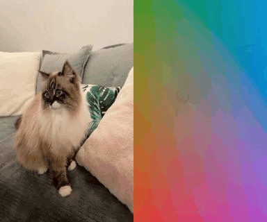

模式: 2d
追踪视频中每个像素的运动轨迹。颜色编码表示像素在首帧中的位置 — 当物体移动时, 其颜色与背景产生差异, 从而可视化运动区域。
运动区域追踪
背景保持原始视频, 仅运动区域叠加追踪颜色 (黄色轮廓标记运动边界):
原始输出对比
左: 原始视频 | 右: 全像素追踪颜色编码

关键帧

帧 000

帧 005

帧 010

帧 015

帧 019
面向具身数据采集场景的关键点追踪系统的设计与实现
| 项目 | 值 | 状态 |
|---|---|---|
| conda 环境 | E:\Conda\envs\track4world\python.exe | OK |
| Python | 3.11.15 | OK |
| PyTorch | 2.5.1+cu121 | OK |
| CUDA | 可用 | OK |
| GPU | NVIDIA GeForce RTX 3050 Laptop GPU | 4.0 GB VRAM |
| 库 | 版本 | 用途 |
|---|---|---|
| timm | 1.0.25 | PyTorch Image Models (骨干网络) |
| einops | 0.8.1 | 张量操作工具 |
| gradio | 5.49.1 | Web UI 框架 |
| viser | 1.0.15 | 3D 点云可视化 |
| open3d | 0.18.0 | 点云处理与渲染 |
| transformers | 4.57.3 | HuggingFace 模型加载 |
| sam2 | OK | Segment Anything 2 (动态分割) |
使用 demo_data/cat.mp4 测试视频, RTX 3050 (4GB) 上的推理性能:
| 模式 | 帧数 | 分辨率 | 推理耗时 | PLY | NPY | 状态 |
|---|---|---|---|---|---|---|
| 2d | 20 | 320px | 195.98s | 0 | 0 | 成功 |
| 3d_ff | 10 | 448px | 63.29s | 20 | 12 | 成功 |
| 3d_efep | 10 | 448px | 48.22s | 19 | 13 | 成功 |
注意: 4GB VRAM 限制下, 3D 模式需使用
camera_base + track4world_moge.pth (1.7GB)。DA3/Pi3 大模型 (>5GB) 会 OOM。
模式: 2d
追踪视频中每个像素的运动轨迹。颜色编码表示像素在首帧中的位置 — 当物体移动时, 其颜色与背景产生差异, 从而可视化运动区域。
背景保持原始视频, 仅运动区域叠加追踪颜色 (黄色轮廓标记运动边界):
左: 原始视频 | 右: 全像素追踪颜色编码

帧 000
帧 005
帧 010
帧 015
帧 019
模式: 3d_ff
原理: 对首帧进行深度估计, 反投影到 3D 空间。然后通过 2D 光流追踪每个像素在后续帧的运动,
结合几何约束更新 3D 坐标。
输出: 每帧一个 PLY 点云 (带 RGB 颜色) + 场景流点云 + 相机位姿。

3D Reconstruction (Frame 0) (140,085 点)

3D Reconstruction (Frame 9) (140,125 点)

Scene Flow Visualization (140,030 点)
| 文件 | 格式 | 内容 |
|---|---|---|
frame_*.ply | PLY 点云 | 每帧 3D 重建点云 (顶点带 RGB) |
flow_*.ply | PLY 点云 | 场景流投影 (光流追踪后的 3D 位置) |
all_points.npy | NumPy | 所有帧 3D 坐标堆叠 (T, H×W, 3) |
vis_*.npy | NumPy | 每帧可见性置信度 |
c2w.npy | NumPy | Camera-to-World 变换矩阵 (T, 4, 4) |
模式: 3d_efep
原理: 对每一帧独立进行深度估计和 3D 重建, 然后通过光流建立帧间 3D 对应关系,
生成完整的 4D 密集点云轨迹。比 3d_ff 更精确但更慢。
适用: 动态场景、需要高精度 3D 追踪的具身数据采集任务。

3D Reconstruction (Frame 0) (140,119 点)

3D Reconstruction (Frame 9) (140,136 点)

Scene Flow Visualization (140,119 点)
| 特性 | 3d_ff (首帧追踪) | 3d_efep (全像素全帧) |
|---|---|---|
| 深度估计 | 仅首帧 | 每帧独立估计 |
| 3D 精度 | 依赖首帧质量, 远帧误差累积 | 逐帧独立, 精度更高 |
| 核心输出 | all_points.npy (首帧投影) | trajectory_all_pointmap.npy (4D轨迹) |
| 速度 | 较快 (一次几何计算) | 较慢 (逐帧计算) |
| 典型场景 | 静态场景预览 | 动态场景、精确具身追踪 |
使用 Viser 在浏览器中交互查看 3D 点云动画 (支持旋转、缩放、播放)。
直接双击 .ply 文件即可用 MeshLab 打开。下载 MeshLab
| 问题 | 解决方法 |
|---|---|
| 浏览器一直 "连接中" | 等待 10-30 秒 (首次加载点云数据); 尝试刷新; 使用 Chrome |
| 页面空白 / 无点云 | 用简化版查看器 (自动降采样); 或加 --downsample 8 |
| No module named 'open3d' | 必须使用 track4world 环境的 Python, 不是系统 Python |
输入: 单目 RGB 视频 (B, T, 3, H, W)
│
├─[骨干网络] DINOv2-ViT-L / Pi3X / DA3-Giant
│ 输出: 3D点图(T,H,W,3) + 流特征(T,128,H/8,W/8) + 相机位姿(T,4,4)
│
├─[全局特征聚合] VGGT-style Alternating Attention
│ 帧级注意力 ⇄ 全局注意力 (2D Rotary Position Embedding)
│
├─[RAFT 迭代优化] 滑动窗口 (S=16, stride=8)
│ 相关性金字塔(5层) → 运动编码 → 2D/3D流更新 ×4次
│ Convex Upsampling 8× → 全分辨率
│
└─[输出]
├─ 2D 光流 (T, 2, H, W) + 可见性 (T, 2, H, W)
├─ 3D 场景流 (T, 3, H, W) + 点云 (T, H, W, 3)
└─ 相机位姿 (T, 4, 4) Camera-to-World